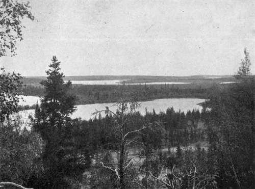
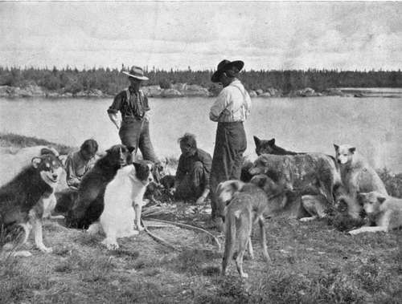

Chapter I. In A Frontier Settlement
Description
This section is from the book "Wild Life In Canada", by Angus Buchanan. Also available from Amazon: Wild Life in Canada.
Chapter I. In A Frontier Settlement
The railroad terminates at the crest of a stiff incline a mile short of the head-waters of Crooked Lake. The rural train, which travels the roughly-laid single line on alternate days, completes the monotonous, uneven journey with a final struggle up-grade, between lines of coniferous forest, and comes to a cautious standstill, emitting deep-throated blasts of rebellious protest, in a narrow clearing at the lower edge of the small frontier town of Big River.
Straggling, train-tired passengers are told gruffly that this is the End of the Line.
One enters the settlement-that is, one descends from the train and traverses the total two hundred yards of main thoroughfare-and at once, and thereafter is struck by the conflicting types of men and habitations.
Here civilisation ends and the wilds begin. So far has engineering and enterprise progressed ; thenceforward lie the untouched lands of the limitless North. Here commingle the old spirit of the untamed wild and the new spirit of civilisation. There are grim men from the woods and the trail, English-speaking, French, Galicians, Halfbreeds, Indians, rough-clad, stalwart, untrammelled, who talk in slow-spoken speech with fearless bearing, while about their feet move their company of dogs-restless, prowling, hungry brutes; neglected summer pensioners, but, in winter, the pride of their masters-the indomitable sled-dog. They are men and beast of their surroundings; hard-fighters who wrest a stern living from virgin forest and stream, and who ask no greater reward than to retain their boundless freedom.
To the men their freedom is their all. They cannot tell you why, again and again they seek the North; yet they cannot leave it. A mood of discontent, or a vivid picture of everlasting pleasure which they paint in imagination, sends most of them, at some time or other, to seek " civilisation," saying, " I wall live as other people do." But they seldom, if ever, keep their resolve. They are out on the North trail just as soon as the primitive wildness, which is in them as it is in wild animals, awakes anew and bids them seek again the quiet places. Such men are the vanguard-the unstarred leaders of advancing immigration that, as the rising tide on the seashore, ever overlaps the old mark, and escapes onward, ever onward, to populate the surface of a vast new country.
Less prominent, far less striking, in this village of the parting of the ways, are the people of the New World-mill clerks, and trading storekeepers, and their assistants; and their two-score wives and daughters. All somewhat diminutive against the strong contrast of frontier manhood ; somewhat unworthy-even trivial. Each holding dearly to business, to the guiling dress of the shop counter, and the much frayed ribbons of a gaudy, doubtful society.
These are the interlopers, the people from the South ; the harbingers of civilisation, who have come, with their dollars and their trash, to disturb the beauty and peace of virgin nature. And those are the people who speak, with pride, of the Town-site ; who proclaim the magnificence of a meagre street or two, of meretricious frame-built houses in narrow land plots; and who point to the importance of a lumber mill and a gaunt, top-heavy Boarding House as if, on that guarantee, the future of Big River were assured, and their fortunes.
They forget too easily, in their vanity, that it is not to those things that they owe their prosperity, but to the wonderful richness of the nature around them. And theirs is a circumstance that always fills me with a certain amount of sadness. They may be rich in a worldly way, but how poor they are of intellectual enthusiasm-at their feet lies the broad, beautiful world, yet must they trample it under with eyes only for the god of Gold, and Power, and Pleasure. . . . Ah! well- it is their life ; small perhaps, perhaps somewhat narrow, but they know no other. They are part of the great scheme of things ; impelled by heritage and circumstance to follow a well-trodden channel, and counselled by a strong commercial instinct to launch out into activity and endeavour, though, in life's short pilgrimage, they may destroy the rich growth of centuries in building up the ardent ambitions of the hour.
But the greater things, the things which are neither little nor personal to any man, the phantom forces which are behind the Universe- the forces which ordain mankind to life, to an existence, and to death-as fish, or fowl, or fly, is ordered-those are the forces which are the soul of the North. And it is a soul which whispers thafr the land and water and sky of nature's universe will grow and nourish and still be beautiful while race after race of mankind rise up, halt a little, and pass away.
To anyone who valued, with the fresh outlook of a stranger, the intensity of first impressions, the world of the North showed calm and of fathomless beauty and mystery, and dominated all; yea, even the foreground of humanity. It was all-powerful, this vastness of eternity, yet all forgiving; and one was constrained to murmur :
So great this beautiful earth,
So little our earthly being,
So let us pass ; each in our own way.
It was in this vein, then, that I mused of the Frontier, and Beyond, on early acquaintance.
Time had passed since the evening of my arrival. I had been two days in Big River-two long days of delightful, ruminating freedom amongst the older bushmen of the place. And now it was the evening of the second day.
I sat at the only table occupied in the great, bare, paintless, featureless, interior of the barnlike Boarding House of Big River. I had finished the evening meal-a hungry man's full fare of pork and beans and potatoes, accompanied by the inevitable thick-rimmed mug of hot tea-and looked round me with the air of one who is satisfied and who has accomplished the final task of a long, pleasurable day. I knew, in hail-fellow-well-met fashion, all but one of the half-dozen others at the table. There were the Engineer and the Conductor, who had come in, an hour ago, on the evening train- Minnesota Joe, a self-famed, talkative trapper from the States-and Pete Deschambault and Louis Breau, two French-Canadian lumber-jacks.
The World Of The North
Limitless uninhabited expanse of land, lake, and river.
Typical Sled-Dogs
Idle summer pensioners; the pride of their masters in winter.
But who was the new-comer ? That was what I pondered with a half-hope that he might be an experienced canoe-man such as I wanted to hire for a long journey. He was of middle age and uncommunicative, this stranger who sat among them; he ate his evening meal preoccupied, and silently. Undoubtedly he came from the quiet places and from the hard trail. Was not his face furrowed and worn with exposure, was not his hair rough and untended- and ate he not wolfishly, as a man who always knows great hunger ?
When the new-comer and the two lumber-jacks had risen from their meal and left the Boarding House, I addressed the Train-Conductor.
" Seen new-comer before, Neal ? "
" Ya, stranger. Name, Joe Ryan. He's just in. Been trapping or lumbering all winter."
"He's a talkative cuss, Neal; meditates as if he were planning next winter's trap line."
" Ya, stranger, it's the bushman's way. They live not by what they say, but by what they do. Words ain't much use to them; my trade's different."
" Yes, Neal, you've a persuasive tongue, and you make by it. But is there any chance of this new-comer accepting hire for a summer on the canoe trail ? "
" I don't know. It's hard to hire those men for love or money if the work 1 don't' appeal to them. Going far, Stranger ? "
" Yes. I leave on the long trail north to Brochet1 as soon as ice moves in Crooked Lake. Stiff going, they tell me; few in those parts have been right through. Bad rapids on the Churchill; blind c takes '3 on all the lakes."
" Aye, I've heard tell o' it, Stranger, dreary tales too. But Joe's your man, if he will go.
He's reckoned a good hand here."
We parted then-each to bunk for the night.
Next morning, I entered into conversation with Joe Ryan as we were standing together at the entrance to the Boarding House idly enjoying the glorious fresh spring air.
" Do you feel it, man ? " I exclaimed, turning to the new-comer with enthusiasm. " This Earth's awakening! this full, rich flood, which, at the bidding of the mellow wind, trembles in every timbre of the forest. The sleep of the snows is over. Is it not so ? "
1 Far North Hudson Bay Fort on north end of Reindeer Lake.
2 Blind " takes "-the heads of rivers where the lake waters find outlet, often concealed behind forested points, or somewhere in a score or two of bays.
Continue to:
- prev: Preface
- Table of Contents
- next: The Police